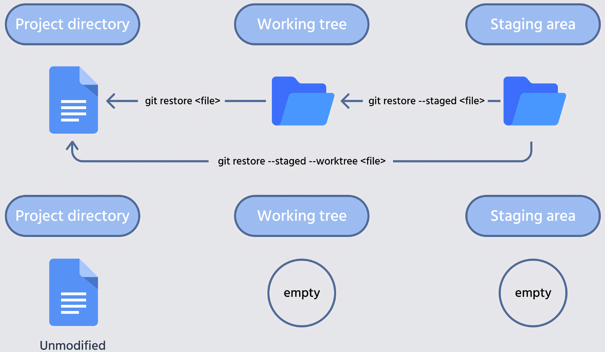

Controle de versão com git, GitHub e RStudio
5 de junho de 2025
IMPORTANTE!!!
Estamos num espaço seguro e amigável
- Sintam-se à vontade para me interromper e tirar dúvidas


1. Conferindo os computadores
R (>4.5.x)
https://www.r-project.org
RStudio (>2025.05.0)
https://www.rstudio.com
git (>2.34.x)
https://git-scm.com


1. Conferindo os computadores
gitKraken

2. Controle de versão
Quem nunca…

2. Controle de versão
Manejar projetos individualmente

2. Controle de versão
Manejar projetos compartilhados

2. Controle de versão
Manejar projetos no tempo

2. Controle de versão
Principal ferramenta utilizada em grandes projetos


2. Controle de versão
Cada vez mais necessário em colaborações

3. git e GitHub
git
- Software (app) que faz o controle de versão
- Maneja os repositórios locais (computador) e repositório remotos (e.g. GitHub)

3. git e GitHub
git
- Criado por Linus Torvalds em 2005 para substituir o BitKeeper no gerenciamento do Kernel Linux
- Software livre, distribuído sob a licença GNU GPL v.2


3. git e GitHub
GitHub
- Repositórios remotos
- Plataformas de hospedagem e controle de versão de arquivos/códigos


3. git e GitHub
ATENÇÃO: dois conceitos!
- git: software (app) que faz o controle de versão
- GitHub: plataforma para hospedar códigos versionados

3. git e GitHub
ATENÇÃO: dois conceitos!
- git: software (app) que faz o controle de versão
- GitHub: plataforma para hospedar códigos versionados

Prática 1
GitHub
Vamos criar uma conta no GitHub (caso não possuam)

Prática 1
GitHub
Salvem ou recuperem essas informações!
username: mauriciovancine
email: mauricio.vancine@gmail.com
senha: !@#$%¨&*+

4. Detalhes do GitHub
Perfil

4. Detalhes do GitHub
Settings: superior direito > foto do perfil > Settings

4. Detalhes do GitHub
Settings: superior direito > foto do perfil > Settings

4. Detalhes do GitHub
Settings

4. Detalhes do GitHub
Repositório

4. Detalhes do GitHub
README.md

Prática 2
Criem uma página inicial para o perfil do GitHub

6. Configurações
RStudio
 {fig-align=‘center’
{fig-align=‘center’
6. Configurações
RStudio
Tools > Global Options > Git/SVN

6. Configurações
RStudio
- Marque Enable version control interface…
- Git executable:
- Windows:
C:/Program Files/Git/bin/git.exe - Ubuntu:
/usr/bin/git - Mac:
/usr/bin/git

6. Configurações
RStudio
Chave SSH
- Create RSA key
- View public key
- Copiar: Ctrl + C


6. Configurações
GitHub
- Add chave SSH:
Perfil > Settings > SSH and GPG keys > New SSH key

6. Configurações
GitHub
- Title: um nome qualquer (eu add por nome de PC ou notebook)
- Key: colar (
ctrl + v) - Add SSH key

6. Configurações
git
git config: definir as configurações de usuário do git- Terminal (colar com
ctrl + shift + v)

7. Controle de versão na prática
Duas formas de trabalhar com o git e GitHub
- Iniciando um projeto em nosso computador - localmente (git)
- Iniciando por um repositório remoto - remotamente (GitHub)


7. Controle de versão na prática


7. Controle de versão na prática

7. Controle de versão na prática


8. Iniciando localmente
git init: inicia o versionamento de um repositório local


9. Iniciando remotamente
Fork: cópia de um repositório para o seu repositório (GitHub)

Prática 5
Forkar um diretório remoto
- Forken o repositório do workshop de git

9. Iniciando remotamente
Agora o repositório do workshop, que estava no meu GitHub, foi copiado (“garfado”) para o GitHub de vocês

9. Iniciando remotamente
git clone: download de um repositório remoto (e.g. GitHub) para o seu repositório local (computador)

9. Iniciando remotamente
- Download diretamente do repositório no formato .zip

9. Iniciando remotamente
- Usando o terminal para clonar pelo SSH (configurado anteriormente)

9. Iniciando remotamente
- Usando o terminal para clonar pelo SSH (configurado anteriormente)

9. Iniciando remotamente
- Usando o Projeto do RStudio para clonar pelo SSH (configurado anteriormente)

9. Iniciando remotamente
3.1 Criar um Projeto R com controle de versão
File > New Project > Version Control

9. Iniciando remotamente
3.2 Escolher clonar repositório do GitHub
Git

9. Iniciando remotamente
3.3 Preencher com dados do repositório do GitHub
Repository URL

10. Versionamento


10. Versionamento
Comandos git para o fluxo de trabalho dos repositórios


10. Versionamento
Fluxo do versionamento

10. Versionamento
Fluxo do versionamento
- Diretório de trabalho (working directory): pasta com os arquivos [working tree] (.git)
- Preparação (staging area): arquivos adicionados para serem versionados [Index] (.git)
- Repositório (repository): versão consolidada dos arquivos [HEAD] (.git)

10. Versionamento
Fluxo do versionamento usando fotos (working tree)

10. Versionamento
Fluxo do versionamento usando fotos (git add)

10. Versionamento
Fluxo do versionamento usando fotos (git commit)


10. Versionamento
Terminal do RStudio

10. Versionamento
Vamos criar um arquivo no diretório
Usando a aba Terminal do RStudio

10. Versionamento
git add [file]: adiciona mudanças após edições (staging area) [Index]
10. Versionamento
git add -v [file]: adiciona mudanças após edições (staging area) [Index]
10. Versionamento
git add -Av: adiciona todas mudanças após edições (staging area) [Index]
10. Versionamento
git add .: adiciona todas mudanças após edições (staging area) [Index]
10. Versionamento
git commit: registra as alterações da staging area no repository [HEAD]
- Cria um snapshot do repositório, contendo:
- Mudanças realizadas nos arquivos
- Mensagem descritiva (mensagem do commit)
- Metadados do autor, data e identificador único (hash)
10. Versionamento
git commit -m "[mensagem]": registra as alterações da staging area no repository com uma mensagem [HEAD]

10. Versionamento
Fluxo do versionamento
- Diretório de trabalho (working directory): pasta com os arquivos [working tree] (.git)
- Preparação (staged area): arquivos adicionados para serem versionados [Index] (.git)
- Repositório (repository): versão consolidada dos arquivos [HEAD] (.git)
10. Versionamento
Usando a aba Files do RStudio, vamos abrir e editar o arquivo test.txt
10. Versionamento
git status: mostra o estado do repositório
10. Versionamento
git commit -m "[mensagem]": registra as alterações da staging area no repository com uma mensagem [HEAD]
10. Versionamento
git status: mostra o estado do repositório
10. Versionamento
Fluxo do versionamento
- Diretório de trabalho (working directory): pasta com os arquivos [working tree] (.git)
- Preparação (staged area): arquivos adicionados para serem versionados (.git)
- Repositório (repository): versão consolidada dos arquivos (.git)

12. Histórico
git log: histórico dos commits
- Identificador do commit (hash)
- Autor
- Data
- Descrição (mensagem de commit)

12. Histórico
hash
- Identificador único, gerado pelo git, que representa um commit
- É baseado no conteúdo do commit (alterações, autor, data)
- SHA-1 (Secure Hash Algorithm 1): hexadecimal de 40 caracteres
- Permite localizar rapidamente um commit
12. Histórico
git log: cheatsheet

13. Diferenças
git diff: diferenças realizadas em um repositório

13. Diferenças
git diff: diferenças entre working directory e staging area
Observação: Não retornou nenhuma diferença, pois não editamos o arquivo
13. Diferenças
git diff: diferenças entre working directory e staging area
Vamos editar o arquivo “test.txt” usando o terminal

14. Desfazer
git restore: desfaz alterações na working tree ou staging area
git revert: desfaz commits, mas preserva o histórico (criando outro commit)git reset: desfaz commits, mas deleta o histórico (deletando commits)
 
14. Desfazer
git restore [file]: desfaz alterações na working tree
14. Desfazer
git restore [file]: desfaz alterações na working tree
- Apaguem o arquivo
test.txtda pasta test
14. Desfazer
git restore [file]: desfaz alterações na working tree
14. Desfazer
git restore [file]: desfaz alterações na working tree
- Arquivo reapareceu na pasta…
14. Desfazer
git restore --staged: desfaz alterações na staging area, mas mantém alterações dos arquivos
14. Desfazer
git restore --staged: desfaz alterações na staging area, mas mantém alterações dos arquivos
- Vamos editar o arquivo “test.txt” usando o terminal
14. Desfazer
git restore --staged: desfaz alterações na staging area, mas mantém alterações dos arquivos
14. Desfazer
git restore --staged: desfaz alterações na staging area, mas mantém alterações dos arquivos
- Vamos adicionar essas mudanças na staging area
14. Desfazer
git restore --staged: desfaz alterações na staging area, mas mantém alterações dos arquivos
14. Desfazer
git restore --staged: desfaz alterações na staging area, mas mantém alterações dos arquivos
14. Desfazer
git reset [modo] [hash]: desfaz commits, mas deleta o histórico (deletando commits)
Modos:
--soft: move HEAD para outro commit (modo seguro)--mixed: move HEAD e desfaz staging (modo seguro)--hard: move HEAD, desfaz staging e descarta alterações nos arquivos (modo não seguro)


15. Ramificações
- Branch (ou ramo) é uma linha paralela de desenvolvimento

15. Ramificações
git branch [nome-branch]: criar uma branch
15. Ramificações
git switch [nome-branch]: trocar a branch de edição

15. Ramificações
git branch: lista os branchs e verifica a branch de edição
15. Ramificações
git switch -c [nome-branch]: criar e mudar para a nova branch
15. Ramificações
git branch: lista os branchs e verifica a branch de edição
15. Ramificações
git branch -m [novo-nome]: renomear uma branch de edição
15. Ramificações
git branch -m [nome-antigo] [novo-nome]: renomear uma branch
15. Ramificações
git branch -d [nome]: deletar uma branch
15. Ramificações
Vamos criar um arquivo no diretório e na branch-2
15. Ramificações
git switch: trocar a branch de edição
15. Ramificações
git switch: trocar a branch de edição
- O arquivo sumiu…
15. Ramificações
git merge: mescla as branchs em uma única branch

15. Ramificações
git merge: mescla as branchs em uma única branch
15. Ramificações
git merge: mescla as branchs em uma única branch


16. Remoto

16. Remoto
git remote add: adiciona ligação com um repositório remoto (GitHub)
- Observação: usar o SSH para não precisar digitar a senha
16. Remoto
git push: envia suas alterações (commits) feitas localmente para o repositório remoto (GitHub)

16. Remoto
git push: envia suas alterações (commits) feitas localmente para o repositório remoto (GitHub)
Função:
- Atualiza a branch correspondente no repositório remoto
- Torna suas mudanças disponíveis para outras pessoas
- Se não configurar a chave SSH, exige autenticação (usuário/senha ou token)
16. Remoto
Em caso de incêndio…

16. Remoto
CUIDADO: muitas vezes há conflitos que precisam ser revolvidos entre o repositório local e o remoto


16. Remoto
Limites de tamanho
- Arquivos acima de 25 MB causam erro e o envio ao GitHub é bloqueado
- Para arquivos maiores, é necessário usar o Git Large File Storage (LFS)
- O repositório no GitHub tem limite de 5 GB no total
- É recomendável manter o repositório com menos de 1 GB
- O GitHub envia avisos quando o tamanho se aproxima do limite
- Ao exceder o limite, o envio é bloqueado com uma mensagem de erro


16. Remoto
git pull: busca atualizações do repositório remoto e as traz para o repositório local, alterando a branch atual

18.Conflitos
Conflitos no repositório local
18.Conflitos
Conflitos no rep. local vindos de um rep. remoto
19. Interface Gráfica do RStudio
Git Panel
- RStudio tem um cliente Git na aba “Git”
- Esse painel aparece em projetos que estejam versionados com git

19. Interface Gráfica do RStudio
Git Panel - Detalhes

19. Interface Gráfica do RStudio
Git Panel - Branches

19. Interface Gráfica do RStudio
Git Panel - Diff - Changes: Revisar mudanças

19. Interface Gráfica do RStudio
Git Panel - Diff - History: Histórico de mudanças

19. Interface Gráfica do RStudio
Git pane - Staged

19. Interface Gráfica do RStudio
Git pane - Staged e File status

19. Interface Gráfica do RStudio
Git pane - Commit

19. Interface Gráfica do RStudio
Git pane - Commit

19. Interface Gráfica do RStudio
Git pane - Push e Pull


20. Mais informações
Git Cheat Sheet

20. Mais informações
usethis
Comandos direto no R para criar e versionar repositórios